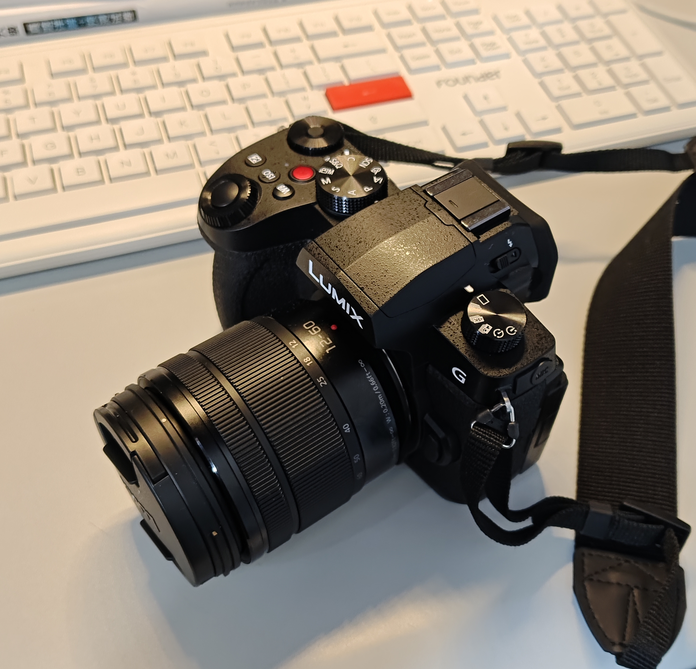
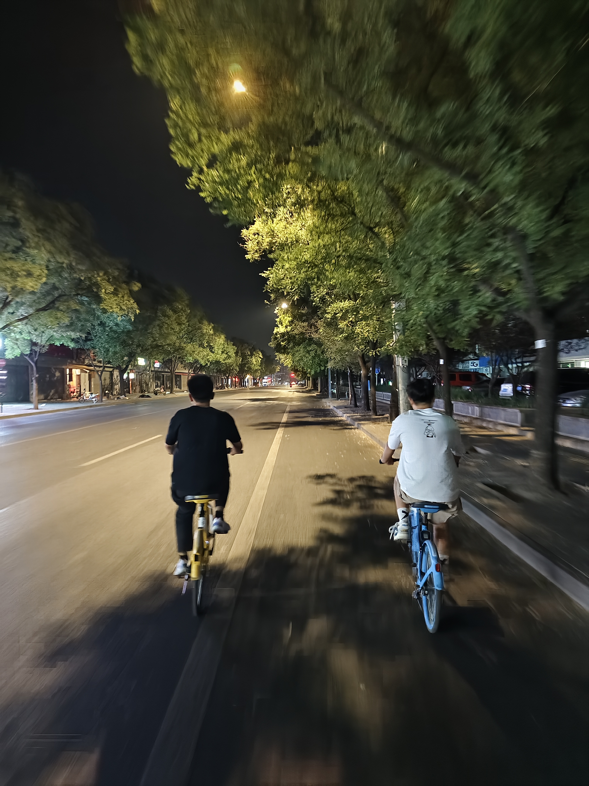
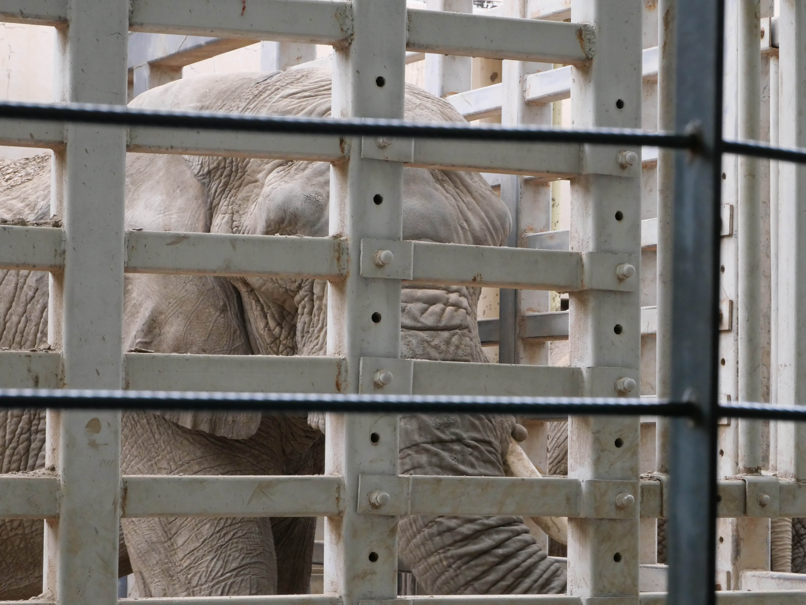

第五周总结
相机到了
第五周总结（9.29-10.5）
到了 天安门升旗 北京动物园
相机到了，捉摸了几天，感觉还行，够用是真的。
拿到相机后第一件事就是咔咔拍几张，虽然直出不好看，但后期的空间比手机大多了。还有一件是我比较满意的，这个相机的视频功能也是够用的。现在很多手机的拍照能打平入门相机了（比如我的），但是视频能力还是远远不足，毕竟光学镜头的结构优势在。

我们是凌晨2点出发去天安门的，骑了2个小时的共享单车，最后排队过安检到了广场。升旗倒是没给我什么太多感觉，但夜骑的经历真的是独一无二的。凌晨的北京还是灯火通明的，虽然很多楼都不亮灯，但是大部分建筑都是能看的清清楚楚的。特别是快到天安门前的一段路，到处都是高楼，很是壮观，这晚的记忆点就在这里。熬夜确实累，看完升旗我们就坐地铁回去了。

休息了一天后去了北京动物园。逛完后我的感受是：没活力。基本上被围栏围起来的动物都不怎么动，看起来病恹恹。大象就在一个很小的场地中活动，来回踱步，感觉有刻板行为。比较可惜的是熊猫馆和水族馆没去。我们去的比较晚，过几个小时就闭馆了，所以就没排熊猫馆的队；水族馆的票太贵了，60一张，我们也没去。

本周主要是拿到心心念念的相机了，所以外出拍照的意愿比较强，也没做什么规划。